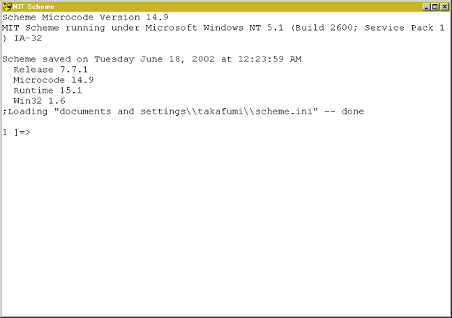

2. Using Scheme as a Calculator
Crick Start → All Programs → MIT Scheme → Scheme
to start up the
Scheme interpreter and a console like the following picture will appear.

First, let's calculate '1+2'. Give (+ 1 2) to the prompt.
1 ]=> (+ 1 2)
;Value: 3
1 ]=>
The interpreter returns 3 as the answer.
Pay attention to following three points:
- A pair of parentheses indicates one step of calculation.
In this case, (+ 1 2) indicate a step of 1+2.
- A function name comes after the open parenthesis followed by arguments.
Most of operators in Scheme are functions.
In this case, function '+' comes first then two arguments 1 and 2 follow.
- Separators of tokens are spaces, tabs and newlines. No comma nor colon is used as a separator.
Let's analyse the process of the calculation in detail.
In the case of functions, calculation proceeds after all arguments
are evaluated. The order of the evaluation is not specified, which means
that arguments are not always evaluated from the left to the right.
- The symbol '+' is evaluated to be a procedure addition.
Give just '+' from the front end and the interpreter responds
[arity-dispatched-procedure 1]
which indicates that '+' is a symbol for "procedure 1".
- '1' is evaluated to be 1. In general, booleans, numbers, characters, and strings are evaluated to be themselves.
On the other hand, symbol is evaluated to be something else.
- '2' is evaluated to be 2.
- Finally, (+ 1 2) is evaluated and 3 comes out from the parentheses.
In the Scheme, evaluated values are coming out from the parentheses and
the value coming from the outermost parentheses is printed on the front end.
Function '+' accepts arbitrary numbers of arguments.
(+) → 0
(+ 1) → 1
(+ 1 2) → 3
(+ 1 2 3) → 6
3. Four Basic Arithmetic Operations
Scheme (and most of Lisp) can treat fractional numbers. Function exact->inexact
is to convert from fractional numbers to floating point numbers.
Scheme can also treat complex numbers. Complex numbers are represented by
a+bi, where
a and b are real and imaginary parts.
+, -, *, and / represent
addition, subtraction, multiplication, and division, respectively.
These functions accept arbitrary numbers of arguments.
Examples:
(- 10 3) → 7
(- 10 3 5) → 2
(* 2 3) → 6
(* 2 3 4) → 24
(/ 29 3) → 29/3
(/ 29 3 7) → 29/21
(/ 9 6) → 3/2
(exact->inexact (/ 29 3 7)) → 1.380952380952381
Parentheses can be nested like as follows:
(* (+ 2 3) (- 5 3)) → 10
(/ (+ 9 1) (+ 2 3)) → 2
Formulas consisting of parentheses, tokens, and separators are called S-expressions.
Exercise 1
Calculate followings using Scheme interpreter.
- (1+39) * (53-45)
- (1020 / 39) + (45 * 2)
- Sum of 39, 48, 72, 23, and 91
- Average of 39, 48, 72, 23, and 91 as a floating point.
4. Other Arithmetic Operations
4.1. quotient, remainder, modulo, and sqrt
- Function quotient is to get quotient.
- Functions remainder and modulo are to get remainder.
- Function sqrt is to get the square root of the argument.
(quotient 7 3) → 2
(modulo 7 3) → 1
(sqrt 8) → 2.8284271247461903
4.2. Trigonometric Functions
Functions sin, cos, tan, asin,
acos, and atan
are available. atan accepts one or two arguments.
if the value of atan is expected to be 1/2 π, use
two arguments.
(atan 1) → 0.7853981633974483
(atan 1 0) → 1.5707963267948966
4.3. Exponential and Logarithm
Exponential and logarithm are calculated by exp, and log, respectively.
The value of b to the power of a can be calculated by
(expt a b).
Exercise 2
Calculate following values using Scheme interpreter.
- circle ratio, π
- exp(2/3)
- 3 to the power of 4
- logarithm of 1000
5. Summary
In this chapter, we have used the Scheme interpreter as a calculator.
It will help you to getting used to Scheme.
I will explain about data type 'list' in Scheme in the next chapter.
The Answers for Exercises
Answer 1
;1
(* (+ 1 39) (- 53 45)) ⇒ 320
;2
(+ (/ 1020 39) (* 45 2)) ⇒ 1510/13
;3
(+ 39 48 72 23 91) ⇒ 273
;4
(exact->inexact (/ (+ 39 48 72 23 91) 5)) ⇒ 54.6
Answer 2
;1
(* 4 (atan 1.0)) ⇒ 3.141592653589793
;2
(exp 2/3) ⇒ 1.9477340410546757
;3
(expt 3 4) ⇒ 81
;4
(log 1000) ⇒ 6.907755278982137
 HOME
HOME Post Messages
Post Messages